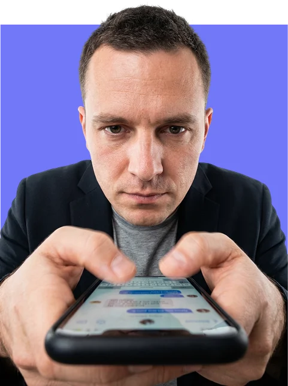
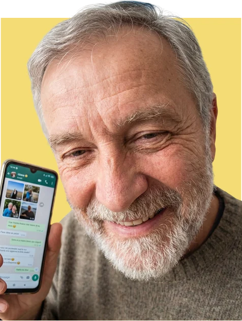
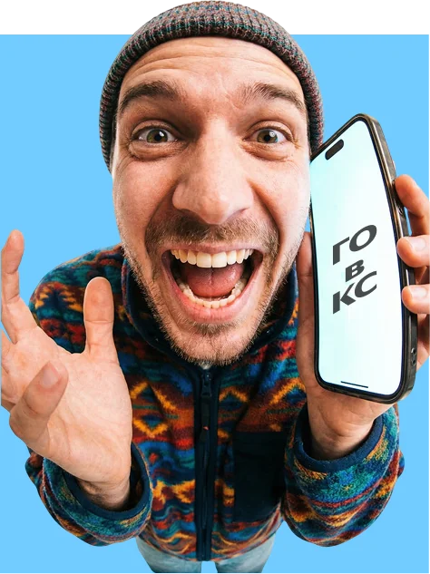

В конце 2025 года Яндекс Телемост сделал поворот: из инструмента для видеозвонков — в полноценный мессенджер с чатами, каналами, звонками и тредами. Задача от заказчика — вывести продукт в B2C и сделать его частью повседневной жизни, а не только сервисом для созвонов.
Телемост
Стратегия вывода Яндекс Телемоста в B2C. Не ещё один мессенджер, а единое пространство, где человек общается, созванивается и управляет своими делами.


Кратко
30 секунд на чтениеЗадача
Телемост знают как созвоны по работе, а не как место для жизни
Продукт стал мессенджером. Нужно вывести его в B2C: привлечь аудиторию, связать с Яндекс 360 и найти монетизацию.
Инсайт
Люди остаются в старом мессенджере не из любви, а потому что там все
Сетевой эффект сильнее лояльности. Значит, нужен не ещё один чат, а то, чего нет у других: порядок в делах и жизни.
Решение
Агент Мост собирает чаты, звонки и дела в одно место
Утренний брифинг, режимы «личное и работа», саммари пропущенного в звонке и веб-чат для близких без регистрации.
Смотреть решениеИз сервиса для видеозвонков — в продукт, которым пользуются каждый день
Задача 1
Привлечь новую аудиторию
Людей, которые пока знают Телемост только по рабочим встречам.
Задача 2
Найти точки роста в Яндекс 360
Связать мессенджер с календарём, документами и заметками.
Задача 3
Предложить монетизацию
Модель, при которой платить за продукт понятно и оправданно.
Разобрались, за что люди любят мессенджеры и почему не уходят из них
До интервью провели конкурентный анализ: смотрели не на функции, а на то, за что пользователи ценят продукты, которыми уже пользуются.

Telegram
Контроль и гибкость: папки, боты, «Избранное» как личный архив.

iMessage
Просто работает, без лишних действий.

Zoom
Надёжность в одной узкой задаче.
MAX
MAX
Единая точка входа в экосистему.

Snapchat
Лёгкость и никакого давления «сохранить навсегда».
Вывод
Никто не объединяет общение, звонки и дела
Каждый закрывает свой кусок жизни.
~20глубинных интервью
5продуктов в конкурентном анализе
3сегмента аудитории
Что узнали из интервью
- Сетевой эффект сильнее лояльности. Люди не переходят в новый мессенджер не потому, что им нравится старый, а потому что не верят, что туда перейдут остальные.
- «Избранное» — хранилище жизни. Мысль потерять его вызывает тревогу.
- Телефон плюс компьютер. Кроссплатформенность превращает мессенджер в рабочий инструмент.
- В звонках теряется контекст. Отошёл на пару минут — и уже не понимаешь, о чём речь.
Три сегмента — и фокус на двух

Фокус
Решалы
Используют мессенджер как рабочий инструмент и задают сценарии использования.

Фокус
Эмпаты
Приходят за связью с близкими и обеспечивают удержание.

Вне фокуса
Душа компании
Важны, но не на этом этапе.
Персона
Люда, 36 лет
Решала и эмпат одновременноПроджект-менеджер, работает удалённо, у неё семья. Держит в голове чаты, звонки, календарь и заметки, разбросанные по разным приложениям.
В какой-то момент тратит больше сил на то, чтобы собрать коммуникацию по кускам, чем на само общение.
Единое пространство, где можно не только общаться, но и управлять жизнью
Каждую фичу проектировали от задачи пользователя по методологии JTBD: сначала — какую работу человек «нанимает» продукт сделать, потом — интерфейс.
01Агент Мост
ДжобаБыстро понять, что происходит сегодня, и не держать всё в голове
- Утренний брифинг с задачами и встречами
- Подсветка конфликтов в расписании
- Единый поиск по чатам, файлам и заметкам
- Задачи можно разделить с близкими
- Документы редактируются прямо в мессенджере


02Личный и рабочий режим
ДжобаНе отвлекаться на личное во время работы — и наоборот
- Переключение меняет профиль, аватар и статус
- Чаты фильтруются, но важные контакты всё равно могут связаться
- Автовозврат в нужный режим по таймеру
- Третий режим — под хобби

Ещё четыре фичи — каждая под свою задачу
03 · Саммари звонков
«Пока вас не было»
Не терять нить разговора, если отошёл на пару минут: короткая выжимка того, что пропустил.
04 · Веб-чат без регистрации
Для тех, кто не поставит приложение
Ссылка с кодовым словом открывается в браузере — так можно позвать в чат маму или бабушку.
05 · Семейный календарь
Дела близких в одном месте
Видеть планы семьи рядом со своими и не держать их в голове.
06 · Заметки в документы
От идеи к файлу в один шаг
Сразу начать работать с заметкой как с документом, без переключения между сервисами.
Для каждой фичи заранее определили, на какие метрики она влияет
Агент МостУдержание и привычка
Веб-чатРост и привлечение
Саммари звонковВовлечённость и удовлетворённость
Модель монетизации
Бесплатно
0 ₽
Чаты, звонки, заметки, календарь и режимы.
Телемост Плюс
299 ₽/мес
Расширенные возможности Агента Моста.
Группа
Семья и команда
Одна подписка на близких или коллег.
Проверили решения на пользователях и заглянули дальше Яндекс 360
Валидация
Юзабилити-тестирование
Провели первую итерацию, запланирована вторая. Количественный опрос запущен — цифры не приводим, пока ответов недостаточно.
Видение
Агент Мост для всей экосистемы
Агент может выйти за пределы Яндекс 360: такси, еда, музыка, фильмы. Телемост — точка входа в управление повседневной жизнью.
Презентовали проект в офисе Яндекса
Команда получила положительную обратную связь от заказчика. Главное, что отметили, — каждая фича выросла из задачи пользователя и сразу связана с продуктовой метрикой. Это отличает продуктовое решение от набора красивых экранов.
Следующий кейсГигасправка